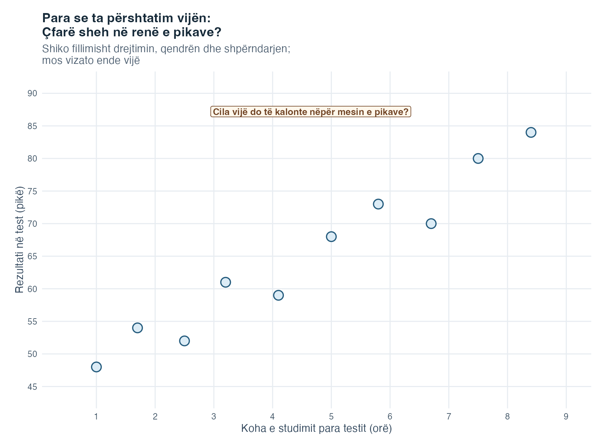
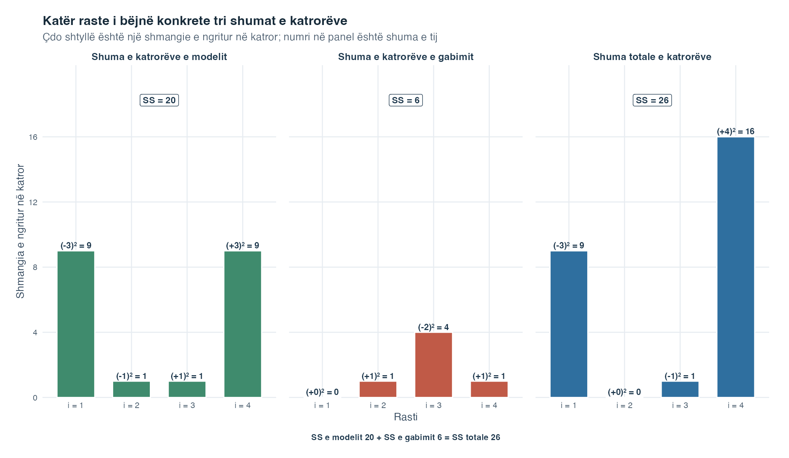
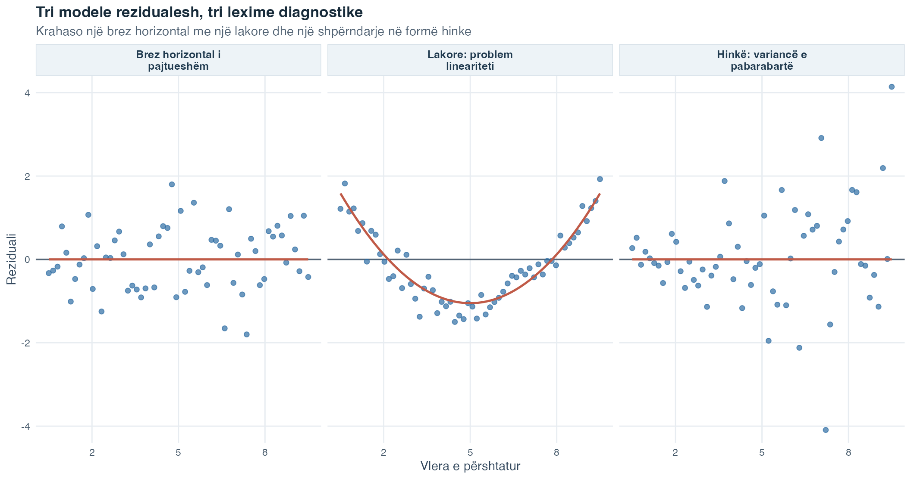

Fleta e ushtrimeve
Zgjidh PDF për shtypje ose Word për redaktim.
Hyrje në Statistikë · Tema 5
Tema 4 na mësoi të lexojmë një diagram shpërndarjeje dhe ta përdorim korrelacionin për të përmbledhur drejtimin dhe forcën e një lidhjeje lineare. Korrelacioni i trajton dy ndryshoret në mënyrë simetrike. Regresioni i thjeshtë linear bën hapin tjetër duke u dhënë role të ndryshme: njëra bëhet ndryshorja parashikuese, ndërsa tjetra bëhet ndryshorja e rezultatit, mesataren e përshtatur të së cilës duam të përshkruajmë.
Mendo për kohën javore të ushtrimit të udhëzuar dhe pikët në një test të arsyetimit statistikor. Reja e pikave mund të ngrihet, por një studiues shpesh dëshiron të pyesë më shumë sesa nëse lidhja është pozitive. Çfarë pikësh mesatare përshtat vija për një sasi të zgjedhur ushtrimi? Sa më e lartë është mesatarja e përshtatur kur ushtrimi ndryshon me një orë? Dhe pse dy studentë me të njëjtën kohë ushtrimi mund të kenë ende pikë të vrojtuara të ndryshme? Regresioni e shndërron renë e pikave në një vijë, që këto pyetje të marrin përgjigje në njësitë fillestare të ndryshoreve.
Vija na jep gjithashtu një mënyrë të re për të mësuar nga ajo që nuk kap. Çdo vrojtim ka një largësi vertikale nga vija, të quajtur rezidual. Shikimi i vijës dhe i rezidualeve së bashku e ndan modelin e përfaqësuar nga ndryshueshmëria që mbetet. Kjo na përgatit për temat vijuese, ku disa ndryshore parashikuese dhe struktura grupesh hyjnë në të njëjtën kornizë të përgjithshme modelimi.
Vija e përshtatur mbetet një model i thjeshtuar. Ajo nuk kalon nëpër çdo vrojtim, nuk është premtim për rezultatin e një individi dhe përshtatja e saj nuk tregon vetvetiu se ndryshimi i ndryshores parashikuese do ta shkaktonte ndryshimin e rezultatit.
Pyetja udhëzuese: Si shndërrohet një re vrojtimesh të çiftuara në një vijë të përshtatur dhe çfarë na tregojnë largësitë nga ajo vijë?
Regresioni i thjeshtë linear përmbledh marrëdhënien mesatare lineare mes një ndryshoreje sasiore parashikuese dhe një ndryshoreje sasiore të rezultatit. Vija përshkruan modelin që kap regresioni, ndërsa rezidualet e mbajnë të dukshëm ndryshimin e mbetur nga një rast te tjetri.
Në fund të kësaj teme do të jesh në gjendje:
Një ndryshore parashikuese është ndryshorja sasiore që përdoret për të përshkruar ose parashikuar dallime në një ndryshore tjetër. E shkruajmë si \(X\). Një ndryshore e rezultatit është ndryshorja sasiore që përshkruhet ose parashikohet dhe shkruhet si \(Y\). Fjala i thjeshtë do të thotë se modeli përmban një ndryshore parashikuese. Nuk do të thotë se pyetja shkencore është e parëndësishme apo se kemi kapur të gjitha ndikimet përkatëse.
Tekstet më të vjetra e quajnë \(X\) edhe ndryshore të pavarur dhe \(Y\) ndryshore të varur. Këto emërtime mund të jenë çorientuese në një studim vrojtues, sepse mund të tingëllojnë si pohime shkakësore. Ndryshorja parashikuese dhe ndryshorja e rezultatit përshkruajnë rolet e ndryshoreve në model pa bërë një pohim shkakësor.
Për një vlerë të zgjedhur \(x\) të ndryshores parashikuese, modeli përshkruan mesataren e kushtëzuar \(E(Y\mid X=x)\): mesataren e rezultatit në popullatë mes rasteve që kanë atë vlerë të ndryshores parashikuese. Vija vertikale lexohet “kur jepet”. Modeli drejtvizor i popullatës është
\[ E(Y\mid X=x)=\beta_0+\beta_1x. \]
Në mënyrë të barasvlershme, një rezultat individual mund të shkruhet
\[ Y_i=\beta_0+\beta_1X_i+\varepsilon_i. \]
Ku:
Një parametër është një madhësi e pandryshuar, por zakonisht e panjohur, e popullatës. Prandaj, \(\beta_0\) dhe \(\beta_1\) janë parametra. Vija e popullatës është e panjohur sepse zakonisht vrojtojmë vetëm një kampion.
Duke përdorur të dhënat e kampionit, e vlerësojmë vijën si
\[ \widehat{Y}_i=\widehat{\beta}_0+\widehat{\beta}_1X_i. \]
Shenja sipër tregon një vlerësim. Vlera \(\widehat{Y}_i\), që lexohet “Y me shenjë sipër”, është vlera e përshtatur: vlera e rezultatit që vija e vlerësuar vendos për rastin \(i\).
Vija përshkruan mesataren e vlerësuar të rezultatit në secilën vlerë të ndryshores parashikuese. Ajo nuk thotë se çdo person me të njëjtën vlerë parashikuese do të ketë të njëjtin rezultat.
Prerja me boshtin \(\widehat{\beta}_0\) është mesatarja e përshtatur e rezultatit kur \(X=0\). Njësitë e saj janë njësitë e rezultatit. Prerja me boshtin mund të jetë e dobishme për përmbajtjen kur zeroja është e mundur dhe ka kuptim. Kur zeroja ndodhet shumë larg diapazonit të vrojtuar të ndryshores parashikuese, ajo ende nevojitet për ta pozicionuar vijën, por mund të mos ketë një interpretim të arsyeshëm në botën reale.
Pjerrësia \(\widehat{\beta}_1\) është dallimi i përshtatur në mesataren e rezultatit që lidhet me një dallim prej një njësie në ndryshoren parashikuese. Njësitë e saj janë njësi rezultati për njësi të ndryshores parashikuese.
Le të supozojmë se ekuacioni i përshtatur është
\[ \widehat{\text{pikët}}=42+2.1\times\text{orët}. \]
Prerja me boshtin thotë se mesatarja e përshtatur është 42 pikë kur koha është zero orë. Pjerrësia thotë se studentët me një orë dallim në ushtrimin javor kanë mesatarisht 2.1 pikë dallim në vlerën e përshtatur. Në të dhënat vrojtuese janë të përshtatshme shprehjet “lidhet me” ose “ndryshon me”. Pohimi se një orë shtesë shkakton 2.1 pikë shtesë do të kërkonte një plan studimi që e mbështet atë përfundim.
Shenja e pjerrësisë jep drejtimin. Një pjerrësi pozitive ngrihet nga e majta në të djathtë, një pjerrësi negative zbret dhe një pjerrësi zero është horizontale.
Përfytyro disa studentë që kanë studiuar për kohë të ndryshme për të njëjtin test. Çdo pikë më poshtë përfaqëson një person: koha e studimit është në boshtin horizontal, ndërsa rezultati i testit në boshtin vertikal. Për momentin nuk ka qëllimisht asnjë vijë. Fillo duke lexuar vetë pikat.

Kaloje figurën në katër hapa të vegjël:
Kështu rregulli i përshtatjes fiton një qëllim intuitiv. Kërkojmë vijën e drejtë që e mban sa më të vogël tërësinë e shmangieve vertikale të ngritura në katror. Ajo kap qendrën e resë dhe jo çdo pikë individuale. Pjesa vijuese emërton vlerën e përshtatur dhe rezidualin për një rast. Më pas, figura e anatomisë tregon saktësisht si e pozicionojnë atë vijë prerja me boshtin dhe pjerrësia.
Pasi njihen dy koeficientët e vlerësuar, vendosja e vlerës parashikuese të një rasti në ekuacion jep vlerën e tij të përshtatur. Rezultati i vrojtuar zakonisht nuk bie saktësisht në vijë. Dallimi i tij vertikal nga vlera e përshtatur është reziduali:
\[ e_i=Y_i-\widehat{Y}_i. \]
Ku:
Një rezidual pozitiv do të thotë se rezultati i vrojtuar është mbi vijë. Një rezidual negativ do të thotë se është nën vijë. Rirenditja e ekuacionit e tregon vrojtimin si dy pjesë:
\[ Y_i=\widehat{Y}_i+e_i. \]
Gabimi i popullatës \(\varepsilon_i\) nuk vrojtohet, sepse vija e vërtetë e popullatës është e panjohur. Reziduali \(e_i\) llogaritet pasi përshtatet vija e kampionit dhe shërben si një vlerësim i atij gabimi. Të dyja idetë lidhen, por nuk janë të njëjta.
Rezidualet mund të pasqyrojnë ndryshueshmëri të zakonshme individuale, gabim matjeje në rezultat, ndryshore parashikuese të lëna jashtë ose një formë modeli që nuk përputhet me marrëdhënien. Vetëm reziduali nuk na tregon cili shpjegim është përgjegjës.
Figura vijuese i ndan dy detyra që shpesh bëhen të ngjeshura kur paraqiten në një pamje të vetme. Paneli i parë shpjegon si prerja me boshtin dhe pjerrësia e pozicionojnë vijën e përshtatur. Paneli i dytë mban të pandryshuar një vlerë parashikuese dhe tregon si ndahet një rezultat i vrojtuar në vlerën e tij të përshtatur dhe rezidualin.
![Dy panele të vendosura njëri mbi tjetrin emërtojnë pjesët e një vije të thjeshtë regresioni. I pari tregon ekuacionin e përshtatur, prerjen me boshtin te zeroja, një hap horizontal prej një njësie, ngritjen përkatëse të pjerrësisë, përkufizimin ngritja pjesëtuar me hapin dhe pikën e mesatareve të kampionit në vijë. I dyti shënon një vlerë parashikuese, rezultatin e përshtatur, rezultatin e vrojtuar dhe rezidualin pozitiv, vlera e vrojtuar minus vlera e përshtatur, me një kujtesë se pikat nën vijë kanë reziduale negative.](t05_simple-regression_files/figure-html/fig-regression-anatomy-1.png)
Në panelin A, të dy boshtet emërtojnë rolin e ndryshores dhe na kujtojnë se koeficienti përdor njësitë fillestare të matjes. Pika \((0,b_0)\) shënon prerjen me boshtin. Hapi horizontal i gjelbër e ndryshon \(X\) me saktësisht një njësi, ndërsa hapi vertikal i gjelbër është ndryshimi përkatës në rezultatin e përshtatur, pra \(b_1\). Pjesëtimi i kësaj ngritjeje me hapin prej një njësie jep pjerrësinë. Pika e shënuar \((\bar X,\bar Y)\) tregon një veti tjetër të kësaj vije të përshtatur nga kampioni: kur përfshihet prerja me boshtin, vija kalon nëpër dy mesataret e kampionit. Pjesa vijuese shpjegon rregullin e përshtatjes që e prodhon këtë vijë.
Paneli B ndjek një rast \(i\). Vija udhëzuese e ndërprerë fillon te vlera e tij parashikuese \(X_i=4.4\) dhe arrin pikën e përshtatur \((X_i,\widehat Y_i)\) në vijë. Pika e vrojtuar \((X_i,Y_i)\) ndodhet mbi të. Prandaj largësia portokalli është \(e_i=Y_i-\widehat Y_i=+1.45\). Një rast nën vijë do të kishte \(Y_i<\widehat Y_i\) dhe një rezidual negativ. Barazia \(Y_i=\widehat Y_i+e_i\) thotë se pjesa e përshtatur dhe reziduali e rindërtojnë së bashku rezultatin e vrojtuar.
Figura emërton anatominë e plotë të kësaj vije mësimore pa bërë pohim shkakor ose pa garantuar rezultatin e një individi. Vija e përshtatur përshkruan një mesatare të kushtëzuar të vlerësuar. Reziduali tregon sa larg ndodhet një rast i vrojtuar nga ajo mesatare, megjithëse vetëm kjo largësi nuk zbulon pse lindi dallimi.
Në një diagram shpërndarjeje mund të vizatohen shumë vija të drejta. Metoda e zakonshme e katrorëve më të vegjël, që shpesh shkurtohet OLS, zgjedh koeficientët që e minimizojnë shumën e rezidualeve të ngritura në katror:
\[ SSE=\sum_{i=1}^{n}e_i^2 =\sum_{i=1}^{n}\left(Y_i-\widehat{Y}_i\right)^2. \]
Ku:
Ngritja në katror parandalon anulimin mes rezidualeve pozitive dhe negative dhe u jep më shumë peshë gabimeve të mëdha. OLS-ja minimizon dallimet vertikale në rezultat. Ajo nuk minimizon largësitë horizontale apo largësitë më të shkurtra pingule me vijën.
Koeficientët që dalin mund të llogariten si
\[ \widehat{\beta}_1 = \frac{\sum_{i=1}^{n}(X_i-\bar{X})(Y_i-\bar{Y})} {\sum_{i=1}^{n}(X_i-\bar{X})^2} = \frac{s_{XY}}{s_X^2} = r_{XY}\frac{s_Y}{s_X}, \]
dhe
\[ \widehat{\beta}_0=\bar{Y}-\widehat{\beta}_1\bar{X}. \]
Ku:
Këto barazi zbulojnë një lidhje të rëndësishme me Temën 4. Pjerrësia është kovarianca krahasuar me variancën e ndryshores parashikuese. Ajo është gjithashtu korrelacioni i rikthyer në njësitë fillestare të ndryshoreve. Formula e prerjes me boshtin siguron që vija e përshtatur të kalojë nëpër pikën \((\bar{X},\bar{Y})\).
Nëse kovarianca dhe korrelacioni janë zero, pjerrësia e vlerësuar është zero. Njohja e \(X\) atëherë nuk e përmirëson vlerën e përshtatur përtej përdorimit të së njëjtës vlerë \(\bar{Y}\) për çdo rast.
Pjerrësia e pastandardizuar ndryshon kur ndryshojnë njësitë e matjes. Shndërrimi i orëve në minuta do të prodhonte një pjerrësi numerikisht më të vogël edhe pse marrëdhënia themelore mbetet e njëjtë.
Një ndryshore e standardizuar e shpreh çdo vrojtim në njësi të devijimit standard. Nëse standardizohen \(X\) dhe \(Y\) para një regresioni të thjeshtë, prerja me boshtin bëhet 0 dhe pjerrësia e standardizuar bëhet
\[ \widehat{\widetilde{\beta}}_1=r_{XY}. \]
Prandaj, në regresionin e thjeshtë linear, një dallim prej një devijimi standard në \(X\) lidhet mesatarisht me një dallim prej \(r_{XY}\) devijimesh standarde në \(Y\). Përdor pjerrësinë e pastandardizuar kur kanë rëndësi njësitë fillestare ose kur llogarit vlerat e përshtatura. Përdor pjerrësinë e standardizuar kur është i dobishëm një përshkrim që nuk varet nga shkalla.
Kjo barazi vlen posaçërisht për regresionin e thjeshtë me një ndryshore parashikuese dhe një prerje me boshtin. Në regresionin e shumëfishtë, një koeficient i standardizuar zakonisht nuk është i barabartë me korrelacionin mes dy ndryshoreve.
Për një vrojtim, shmangia nga mesatarja e rezultatit mund të ndahet në një pjesë të përfaqësuar nga vija dhe një pjesë reziduale:
\[ Y_i-\bar{Y} = \left(\widehat{Y}_i-\bar{Y}\right) + \left(Y_i-\widehat{Y}_i\right). \]
Ngritja në katror dhe mbledhja në të gjitha vrojtimet prodhon ndarjen e ndryshueshmërisë sipas OLS-së. Ky është rezultat për tërë kampionin, jo një barazi e ngritur në katror për secilin rast. Kur modeli përfshin prerjen me boshtin, OLS-ja bën që prodhimet mes shmangieve të përshtatura dhe rezidualeve të japin shumën zero. Prandaj termi i kryqëzuar anulohet vetëm pasi të bashkohen të gjitha vrojtimet:
\[ SS_{\text{total}} = SS_{\text{model}} + SS_{\text{error}}, \]
ku
\[ SS_{\text{total}}=\sum_{i=1}^{n}(Y_i-\bar{Y})^2, \]
\[ SS_{\text{model}}=\sum_{i=1}^{n}(\widehat{Y}_i-\bar{Y})^2, \]
dhe
\[ SS_{\text{error}}=\sum_{i=1}^{n}(Y_i-\widehat{Y}_i)^2. \]
Algjebra mbahet mend më lehtë kur tri largësitë vendosen në të njëjtën shkallë të rezultatit.

Lexoje anën e majtë nga poshtë lart. Mesatarja e rezultatit \(\bar Y\) është pika e përbashkët e nisjes. Shigjeta e gjelbër arrin vlerën e përshtatur dhe përfaqëson \(\widehat Y_i-\bar Y\). Shigjeta portokalli vazhdon nga vlera e përshtatur te rezultati i vrojtuar dhe përfaqëson \(Y_i-\widehat Y_i\). Së bashku, këto dy shigjeta mbulojnë të njëjtën largësi vertikale si shigjeta blu totale, \(Y_i-\bar Y\).
Kutitë në të djathtë kalojnë nga një rast i vetëm te modeli i plotë i përshtatur. OLS-ja i ngre në katror largësitë e modelit dhe të rezidualit për çdo rast dhe i mbledh ato për të gjitha rastet. Kjo jep \(SS_{\text{model}}+SS_{\text{error}}=SS_{\text{total}}\). Raporti \(SS_{\text{model}}/SS_{\text{total}}\) është \(R^2\), pjesa e ndryshueshmërisë së rezultatit në kampion rreth mesatares që përfaqësohet nga vija.
Kutitë simbolike nuk tregojnë qëllimisht përpjesëtime të shpikura. Gjerësitë e tyre janë pjesë e paraqitjes dhe jo të dhëna. Ndarja nuk thotë se modeli ka shpjeguar një shkak, se pjesa e papërfaqësuar është një gabim në kuptimin e përditshëm ose se ndonjë përqindje e caktuar njerëzish është parashikuar saktë.
Marrëdhënia simbolike bëhet më konkrete në një shembull qëllimisht të vogël me katër raste. Le të jetë \(X=(1,2,3,4)\) dhe \(Y=(2,5,4,9)\). Vija e katrorëve më të vegjël është \(\widehat Y=2X\), prandaj vlerat e përshtatura janë \((2,4,6,8)\) dhe mesatarja e rezultatit është \(\bar Y=5\). Çdo shtyllë në figurën vijuese është një shmangie pasi është ngritur në katror. Etiketa e saj e mban të dukshme largësinë me shenjë para ngritjes në katror.

Lexoje fillimisht secilin panel vertikalisht dhe pastaj lidhi panelet horizontalisht. Në panelin e modelit, katër vlerat e përshtatura ndryshojnë nga mesatarja me \((-3,-1,+1,+3)\). Ngritja në katror jep \((9,1,1,9)\) dhe prandaj \(SS_{\text{model}}=20\). Në panelin e gabimit, vlera e vrojtuar minus vlera e përshtatur jep rezidualet \((0,+1,-2,+1)\). Katrorët e tyre \((0,1,4,1)\) japin \(SS_{\text{error}}=6\). Në panelin total, vlerat e vrojtuara ndryshojnë nga mesatarja me \((-3,0,-1,+4)\). Katrorët e tyre \((9,0,1,16)\) japin \(SS_{\text{total}}=26\).
Hapi i fundit është kontrolli për tërë kampionin: \(20+6=26\). Vër re se barazia u përket shumave nëpër të katër rastet. Për shembull, te rasti 3 shmangiet me shenjë plotësojnë \(-1=(+1)+(-2)\), por \((-1)^2\) nuk është e barabartë me \((+1)^2+(-2)^2\). Termat e kryqëzuar anulohen vetëm pasi OLS-ja i bashkon të gjitha vrojtimet. Prandaj fillimisht e kuptojmë një rast me largësi me shenjë dhe pastaj i kontrollojmë tri shumat në tërë kampionin.
Shuma e përgjithshme e katrorëve shënon sa ndryshojnë rezultatet e vrojtuara rreth mesatares së tyre. Shuma e katrorëve e modelit shënon sa ndryshojnë vlerat e përshtatura rreth asaj mesatareje. Shuma e katrorëve e gabimit shënon ndryshueshmërinë e mbetur të rezidualeve të ngritura në katror.
Koeficienti i përcaktimit, që shkruhet \(R^2\), është pjesa e ndryshueshmërisë së përgjithshme të rezultatit që përfaqëson modeli:
\[ R^2 = \frac{SS_{\text{model}}}{SS_{\text{total}}} = 1-\frac{SS_{\text{error}}}{SS_{\text{total}}}. \]
Kur modeli ka prerje me boshtin, \(R^2\) në kampion shtrihet nga 0 në 1. Për shembull, \(R^2=0.40\) do të thotë se vija e përshtatur përfaqëson 40% të ndryshueshmërisë së rezultatit në kampion rreth mesatares së tij. Nuk do të thotë se ndryshorja parashikuese shkakton 40% të rezultatit apo se 40% e njerëzve u parashikuan saktë.
Në regresionin e thjeshtë linear me prerje me boshtin,
\[ R^2=r_{XY}^2. \]
I njëjti \(R^2\) është gjithashtu i barabartë me korrelacionin në katror mes rezultateve të vrojtuara dhe vlerave të tyre të përshtatura:
\[ R^2=r_{Y,\widehat{Y}}^2. \]
Kjo barazi e dytë pyet sa afër i ndjekin vlerat e vendosura në vijë rezultatet që u vrojtuan në të vërtetë. Nuk do të thotë se vlerat e përshtatura dhe të vrojtuara janë të njëjta. Dallimet e tyre vertikale janë pikërisht rezidualet.
Ngritja në katror e heq drejtimin, prandaj \(R^2\) është i njëjtë për korrelacionet \(+0.60\) dhe \(-0.60\). Për ta gjetur drejtimin duhet të shohim pjerrësinë ose korrelacionin.
Gabimi standard i rezidualeve vlerëson devijimin standard të gabimeve të popullatës. Ai e shpreh shkallën tipike të rezidualeve në njësitë fillestare të rezultatit:
\[ s_e = \sqrt{ \frac{\sum_{i=1}^{n}e_i^2}{n-2} }. \]
Emëruesi është \(n-2\), sepse modeli i thjeshtë vlerësoi dy koeficientë, prerjen me boshtin dhe pjerrësinë. \(n-2\) pjesët e mbetura të informacionit të pavarur janë shkallët e lirisë të rezidualeve.
Një gabim standard më i vogël i rezidualeve do të thotë se vrojtimet janë të grumbulluara më ngushtë rreth vijës së përshtatur, të matura në njësitë e rezultatit. Madhësia e tij duhet gjykuar krahasuar me shkallën dhe përdorimin e rezultatit. Ai nuk është i njëjtë me gabimin standard të pjerrësisë, i cili mat pasigurinë e \(\widehat{\beta}_1\) në kampione të përsëritura hipotetike.
Pjerrësia e përshtatur përshkruan këtë kampion. Inferenca statistikore përdor kampionin dhe një model probabiliteti për të arsyetuar rreth pjerrësisë së panjohur të popullatës \(\beta_1\).
Hipotezat e zakonshme dyanëshe janë
\[ \begin{aligned} H_0&:\beta_1=0,\\ H_1&:\beta_1\ne0. \end{aligned} \]
Hipoteza zero thotë se mesatarja e kushtëzuar në popullatë nuk ka pjerrësi lineare. Statistika e testit është
\[ t = \frac{\widehat{\beta}_1}{SE(\widehat{\beta}_1)}, \]
ku
\[ SE(\widehat{\beta}_1) = \frac{s_e}{\sqrt{\sum_{i=1}^{n}(X_i-\bar{X})^2}}. \]
Nën supozimet e shprehura të regresionit dhe \(H_0\), kjo statistikë krahasohet me një shpërndarje \(t\) që ka \(n-2\) shkallë lirie. Vlera p është probabiliteti, duke supozuar modelin zero dhe kushtet e tij, për të marrë një statistikë testi të paktën po aq të papajtueshme me zeron sa ajo e vrojtuar. Ajo nuk është probabiliteti që \(H_0\) është e vërtetë.
Një interval dyanësh besimi \(100(1-\alpha)\%\) për pjerrësinë është
\[ \widehat{\beta}_1 \mathbin{\pm} t_{1-\alpha/2,\,n-2}SE(\widehat{\beta}_1). \]
Shumëzuesi \(t_{1-\alpha/2,\,n-2}\) është vlera kufi përkatëse nga shpërndarja \(t\). Një procedurë besimi 95% është ndërtuar në mënyrë që, nën modelin, 95% e intervaleve të krijuara në kampione të përsëritura të përfshijnë pjerrësinë e pandryshuar të popullatës. Pasi llogaritet një interval, kufijtë e tij janë të pandryshuar. Pohimi frekuentist lidhet me ecurinë afatgjatë të procedurës.
Për një test dhe interval dyanësh që përputhen, vendimet pajtohen. Në \(\alpha=0.05\), e hedhim poshtë \(H_0:\beta_1=0\) pikërisht kur intervali i besimit 95% nuk përfshin zeron. Nëse intervali përfshin zeron, nuk arrijmë ta hedhim poshtë hipotezën zero. Kjo nuk dëshmon se pjerrësia është saktësisht zero.
Materialet mësimore pyesin gjithashtu nëse koeficienti i përcaktimit i modelit të përshtatur ndryshon nga zeroja në popullatë. Në regresionin e thjeshtë me një ndryshore parashikuese dhe me prerje me boshtin, ky nuk është test konkurrues i një ideje tjetër. Është një mënyrë e dytë për të testuar të njëjtin sinjal linear:
\[ \begin{aligned} H_0&:R^2_{\mathrm{popullata}}=0,\\ H_1&:R^2_{\mathrm{popullata}}>0. \end{aligned} \]
Tabela e modelit i pjesëton shumat e katrorëve të modelit dhe të gabimit me shkallët përkatëse të lirisë. Një ndryshore parashikuese jep një shkallë lirie të modelit, ndërsa vlerësimi i prerjes me boshtin dhe pjerrësisë lë \(n-2\) shkallë lirie të gabimit. Statistika që del është
\[ \begin{aligned} F &= \frac{MS_{\text{model}}}{MS_{\text{error}}}\\[3pt] &= \frac{SS_{\text{model}}/1}{SS_{\text{error}}/(n-2)}. \end{aligned} \]
dhe krahasohet me një shpërndarje \(F\) me \(1\) dhe \(n-2\) shkallë lirie. Një vlerë e madhe do të thotë se ndryshueshmëria e përfaqësuar nga vija është e madhe krahasuar me ndryshueshmërinë reziduale që mbetet rreth saj.
Si shembull i vogël numerik, le të supozojmë \(n=12\), \(SS_{\text{model}}=72\) dhe \(SS_{\text{error}}=120\). Atëherë
\[ F = \frac{72/1}{120/10} =6.00. \]
Për \(F(1,10)=6.00\), programi jep \(p\approx .034\). Në nivelin 5%, do ta hidhnim poshtë hipotezën zero të një modeli pa pjesë lineare të përfaqësuar. Nën kushtet e modelit, të dhënat japin kështu dëshmi për një marrëdhënie lineare të ndryshme nga zeroja mes ndryshores parashikuese dhe rezultatit në popullatë. Ky përfundim nuk thotë se marrëdhënia është shkakësore apo se modeli e përshkruan mirë çdo individ.
Me saktësisht një ndryshore parashikuese, testi \(F\) i modelit dhe testi dyanësh \(t\) i pjerrësisë duhet të pajtohen:
\[ F=t^2. \]
Këtu, \(\sqrt{6.00}\approx2.45\), prandaj testi përkatës i pjerrësisë do të përdorte \(|t|\approx2.45\) dhe do të jepte të njëjtën vlerë p. Kjo barazi është një vetëkontroll i dobishëm. Ajo shpjegon edhe pse tabela e koeficientëve dhe tabela e modelit mund t’i përgjigjen së njëjtës pyetje të përgjithshme në regresionin e thjeshtë. Në regresionin e shumëfishtë, barazia nuk vlen më për testin e modelit në tërësi, sepse disa pjerrësi testohen bashkë.
Programet statistikore shpesh raportojnë dy tabela që plotësojnë njëra-tjetrën. Tabela e koeficientëve jep vlerësimet e prerjes me boshtin dhe pjerrësisë, gabimet e tyre standarde, statistikat \(t\), vlerat p dhe intervalet e besimit. Tabela e modelit të regresionit, që ndonjëherë paraqitet si tabelë e analizës së variancës, e organizon ndarjen e ndryshueshmërisë në rreshtat e modelit dhe të rezidualeve.
Pjesëtimi i shumës së katrorëve me shkallët e saj të lirisë jep një katror mesatar. Katrori mesatar i modelit i pjesëtuar me katrorin mesatar të rezidualeve jep statistikën \(F\) të modelit:
\[ F = \frac{MS_{\text{model}}}{MS_{\text{error}}}. \]
Me një ndryshore parashikuese, hipoteza e përgjithshme zero që teston \(F\) është e njëjtë me \(H_0:\beta_1=0\). Prandaj, të dy testet japin të njëjtën vlerë p dhe
\[ F=t^2. \]
Kjo lidhje përgatit rrugën për regresionin e shumëfishtë dhe analizën e variancës, ku tabela e modelit mund të testojë disa koeficientë së bashku.
Një parashikim pikësor e vendos një vlerë të zgjedhur parashikuese \(x_0\) në ekuacionin e përshtatur:
\[ \widehat{Y}_0 = \widehat{\beta}_0+\widehat{\beta}_1x_0. \]
Kur \(x_0\) ndodhet brenda diapazonit të vrojtuar të ndryshores parashikuese, llogaritja është interpolim. Ajo përdor vijën aty ku të dhënat japin mbështetje të drejtpërdrejtë. Edhe atëherë, vlera e përshtatur është një mesatare e vlerësuar e kushtëzuar, jo një rezultat individual i garantuar. Ndryshueshmëria reziduale mbetet.
Kur \(x_0\) ndodhet jashtë diapazonit të vrojtuar, llogaritja është ekstrapolim. Ekuacioni përsëri jep një numër, por të dhënat nuk tregojnë nëse i njëjti model drejtvizor vazhdon atje. Parashikimet bëhen gjithnjë e më të cenueshme ndaj ndryshimeve të formës, kufijve ose përbërjes së popullatës përtej diapazonit të matur.
Raporto gjithmonë diapazonin e vrojtuar të ndryshores parashikuese. Trajtoje një vlerë jashtë atij diapazoni si ekstrapolim, edhe kur programi e shtyp pa paralajmërim.
Një supozim i regresionit është një kusht nën të cilin një llogaritje ose inferencë ka interpretimin e shprehur. Diagnostikat mund të zbulojnë përplasje të rëndësishme me këto kushte, por një grafik i qetë nuk mund të dëshmojë se çdo supozim është i vërtetë.
| Kushti | Kuptimi me fjalë të thjeshta | Çfarë të kontrollosh |
|---|---|---|
| Mesatare e kushtëzuar lineare | Mesatarja e rezultatit ndryshon përafërsisht si një vijë e drejtë në tërë diapazonin e ndryshores parashikuese | Fillo me diagramin e papërpunuar të shpërndarjes; pastaj kontrollo nëse rezidualet tregojnë një lakore |
| Gabime të pavarura | Shmangia e pashpjeguar e një rasti nuk jep informacion për shmangien e një rasti tjetër | Shqyrto si u kampionuan, grupuan, çiftuan ose matën në mënyrë të përsëritur rastet |
| Homoskedasticiteti | Varianca e kushtëzuar e gabimeve është përafërsisht konstante në tërë vlerat e përshtatura | Kërko një brez rezidualesh me shpërndarje të ngjashme vertikale, jo me formë hinke |
| Gabime të kushtëzuara përafërsisht normale për inferencën e shprehur në kampion të vogël | Në secilën vlerë parashikuese, gabimet përputhen me një shpërndarje normale | Shiko një diagram Q-Q të rezidualeve dhe shqyrto shmangiet e forta sistematike |
| Specifikim i mjaftueshëm i modelit | Nuk janë anashkaluar ndryshore të rëndësishme ose forma përkatëse kur interpretimi i synuar varet prej tyre | Përdor njohuri për planin e studimit, teori dhe mjetet e mëvonshme të regresionit të shumëfishtë; asnjë grafik i vetëm nuk mund ta vërtetojë këtë |
| Matje e përshtatshme | Vlerat e ndryshores parashikuese dhe të rezultatit i përfaqësojnë me kuptim madhësitë e synuara | Kontrollo cilësinë e instrumentit, kodimin, kufizimet e diapazonit dhe gabimin e mundshëm të matjes |
Tabela i ndan kushtet që mund të shqyrtohen grafikisht nga kushtet që varen nga plani i studimit dhe matja. Diagrami i shpërndarjes, grafiku i rezidualeve dhe grafiku Q-Q mund të zbulojnë përplasje të dukshme me formën lineare, shpërndarjen konstante ose normalitetin e përafërt të kushtëzuar. Ato nuk mund të na tregojnë nëse vrojtimet u kampionuan në mënyrë të pavarur, nëse u la jashtë një ndryshore e rëndësishme apo nëse një pikëzim e mat mirë konstruktin e synuar. Këto pyetje kërkojnë njohuri për mënyrën si u krijuan të dhënat.
Një grafik i rezidualeve kundrejt vlerave të përshtatura i vendos vlerat e përshtatura në boshtin horizontal dhe rezidualet në boshtin vertikal. Një brez horizontal përafërsisht pa model rreth zeros përputhet me linearitetin dhe variancën konstante të rezidualeve. Një lakore sugjeron se vija e drejtë nuk kap një formë sistematike. Një shpërndarje në formë freskoreje sugjeron variancë të pabarabartë, e quajtur edhe heteroskedasticitet. Varianca e barabartë e kushtëzuar e gabimeve quhet homoskedasticitet.
Këto tri modele dallohen më lehtë kur ndajnë të njëjtat boshte. Paneli i parë përputhet me modelin e synuar linear me variancë konstante. I dyti zbulon lakim sistematik, megjithëse rezidualet vazhdojnë të shfaqen në të dyja anët e zeros. I treti mbetet i përqendruar afër zeros, por zgjerohet ndërsa rriten vlerat e përshtatura. Pra, problemi i tij është ndryshimi i variancës, jo forma e mesatares.

Një diagram normal Q-Q i krahason rezidualet e renditura me pozicionet që priten nga një shpërndarje normale. Këto pozicione të pritshme quhen kuantile. Pikat pranë vijës referuese përputhen me normalitetin e përafërt. Lakimi sistematik ose shmangiet e skajshme në fund kërkojnë shqyrtim. As ndryshorja parashikuese dhe as rezultati nuk duhet të kenë një shpërndarje margjinale normale, pra shpërndarjen e ndryshores kur shqyrtohet veçmas, vetëm sepse ky regresion përdor një model me gabime normale për inferencën.
Një vlerë e veçuar në këtë kontekst ka një rezultat shumë larg nga vlera e saj e përshtatur, prandaj ka rezidual të madh. Një rast me leverage të lartë ka një vlerë parashikuese larg qendrës së ndryshores parashikuese dhe mund ta tërheqë fort vijën e përshtatur. Një rast me ndikim e ndryshon dukshëm një rezultat të rëndësishëm të përshtatur kur përfshihet krahasuar me kur lihet jashtë. Një rast mund të ketë njërën nga këto veti pa i pasur të tria.
Një rezidual i standardizuar e shpreh rezidualin në një shkallë të përafërt të devijimit standard, duke e bërë më të lehtë krahasimin e madhësisë së rezidualeve mes rasteve. Largësia e Cook-ut është një diagnostikë që kombinon madhësinë e rezidualit me leverage-in për t’i renditur rastet që kërkojnë shqyrtim më të afërt. Në këtë mësim e përdorim vetëm si ndihmë për shqyrtim. Asnjë kufi i vetëm numerik nuk e bën një rast të pavlefshëm dhe një rast i pazakontë mund të jetë shkencërisht i rëndësishëm.
Për çdo rast të shënuar, kthehu te regjistrimi dhe konteksti. Kontrollo futjen e të dhënave, kushtet e matjes, përkatësinë në popullatë dhe ndjeshmërinë e përfundimit. Një analizë e ndjeshmërisë e përsërit analizën sipas një alternative të arsyeshme, për shembull me dhe pa një regjistrim të dyshimtë, për të treguar nëse përfundimi varet shumë nga ajo zgjedhje. Korrigjoje rastin kur vërtetohet një gabim. Në raste të tjera, raportoje atë dhe analizën e ndjeshmërisë pa e fshirë vetëm për ta përmirësuar modelin.
Një gabim matjeje është dallimi mes një vlere të matur dhe madhësisë që synon të masë instrumenti. Kjo ka rëndësi në psikologji dhe shkenca të tjera shoqërore, sepse shumë konstrukte, si motivimi ose ankthi, nuk vrojtohen drejtpërdrejt. Një konstrukt i tillë i pavrojtuar quhet ndryshore latente dhe përfaqësohet përmes treguesve ose pikëzimeve në teste.
Sipas modelit klasik, ku gabimi i matjes së ndryshores parashikuese është i pavarur nga ndryshorja e vërtetë parashikuese dhe gabimet e tjera, pjerrësia e regresionit të thjeshtë zakonisht tërhiqet drejt zeros. Kjo quhet dobësim. Prandaj, një pjerrësi e vlerësuar e dobët mund të pasqyrojë matje me shumë zhurmë të ndryshores parashikuese, si edhe një lidhje themelore të dobët. Ky paralajmërim nuk do të thotë se çdo proces gabimi në matje prodhon të njëjtën anshmëri.
Regresioni i thjeshtë e shndërron korrelacionin e Temës 4 në një model me parashikime, reziduale, matje të përshtatjes dhe inferencë. Rezidualet që prezantohen këtu bëhen themeli për korrelacionin e pjesshëm, ndërsa logjika e koeficientëve dhe tabelës së modelit zgjerohet drejtpërdrejt te regresioni i shumëfishtë dhe analiza e variancës.
Mes formulave të shumta mund të humbasë lehtë qëllimi qendror, prandaj kthehu te reja e parë e pikave. Regresioni pyet nëse një vijë e drejtë mund të japë një përshkrim të dobishëm të mënyrës si ndryshon rezultati mesatar nëpër vlerat e një ndryshoreje parashikuese. Prerja me boshtin e pozicionon atë vijë, ndërsa pjerrësia e përkthen drejtimin e saj në njësitë fillestare. Një pohim si «mesatarja e përshtatur është 2.1 pikë më e lartë për çdo orë shtesë» është më konkret sesa të thuash vetëm se dy ndryshore kanë korrelacion pozitiv.
Metoda është e dobishme pikërisht sepse nuk shtiret sikur çdo pikë ndodhet në vijë. Për çdo rast, vlera e përshtatur përfaqëson pjesën që vendoset në vijë, ndërsa reziduali ruan shmangien e vrojtuar të personit nga ajo. Metoda e zakonshme e katrorëve më të vegjël jep një rregull të qartë për të zgjedhur mes të gjitha vijave të mundshme: zgjidhi prerjen me boshtin dhe pjerrësinë në mënyrë që shuma e rezidualeve vertikale të ngritura në katror të jetë sa më e vogël. Ndarja e shumave të katrorëve pastaj pyet sa ndryshueshmëri të rezultatit përfaqëson vija dhe sa mbetet rreth saj.
Ky kombinim u përgjigjet tri pyetjeve që nuk duhet të shkrihen në një:
Kjo është arsyeja pse regresioni ka rëndësi në psikologji dhe në shkencat shoqërore. Studiuesit shpesh duan ta lidhin një tipar ose ekspozim sasior me një rezultat sasior: kohën e ushtrimit me arritjen, pikët në një shkallë me mirëqenien ose moshën me një reagim të matur. Regresioni e shpreh marrëdhënien në njësi të interpretueshme, e tregon pasigurinë në vend se ta fshehë dhe e bën të dukshme ndryshueshmërinë e pashpjeguar. Megjithatë, ai nuk krijon shkakësi. Plani i studimit, cilësia e matjes, ndryshoret e mundshme të lëna jashtë dhe diagnostika e modelit përcaktojnë sa larg mund të shkojë interpretimi.
Nëse mban mend vetëm një pamje mendore, mbaj këtë rrjedhë: reja e pikave → vija e përshtatur → rezidualet vertikale → ndarja e ndryshueshmërisë → pasiguria rreth pjerrësisë. Ky është thelbi i regresionit të thjeshtë linear. Rrjedha e mbyll temën si metodë e plotë dhe bëhet njëkohësisht gramatika e modeleve vijuese. Korrelacioni i pjesshëm pyet çfarë mbetet nga një marrëdhënie pasi hiqet një ndryshore tjetër. Regresioni i shumëfishtë vendos disa ndryshore parashikuese në të njëjtin ekuacion të përshtatur. Analiza e variancës përdor të njëjtën logjikë të modelit dhe shumave të katrorëve kur ndryshoret parashikuese përfaqësojnë grupe. Kuptimi i mirë i një vije të vetme të jep versionin e parë të plotë të një ideje modelimi që do të rikthehet vazhdimisht gjatë kursit.
Ripërdorim kornizën e simulimit të prezantuar në Temën 1 për të krijuar 160 studentë artificialë të vitit të parë. Një diagram shpërndarjeje në rritje mund të sugjerojë se ushtrimi dhe arsyetimi lëvizin së bashku, por regresioni bëhet i dobishëm vetëm kur mund ta përkthejmë atë model në një vijë të përshtatur dhe të kuptojmë çfarë lë vija të pashpjeguar. Prandaj pyesim nëse koha javore e ushtrimit të udhëzuar lidhet në mënyrë lineare me pikët e arsyetimit statistikor. Ky është një skenar mësimor vrojtues: koha e ushtrimit regjistrohet dhe nuk caktohet, prandaj regresioni nuk mund të tregojë se ushtrimi shtesë shkakton pikë më të larta.
Tri pyetje do ta udhëheqin analizën e përshtatur:
Çfarë mesatareje të pikëve të arsyetimit i përshtat vija një sasie të zgjedhur ushtrimi? Me sa pikë ndryshon rezultati i përshtatur për një dallim prej një ore në ushtrimin javor? Çfarë zbulojnë rezidualet kur rezultati i vrojtuar i një studenti artificial nuk bie mbi vijë?
Së bashku, këto pyetje i mbajnë të ndara parashikimin, lidhjen dhe ndryshueshmërinë individuale.
Për çdo student të simuluar regjistrojmë:
| Ndryshorja | Roli dhe shkalla | Kuptimi |
|---|---|---|
participant_id |
Identifikues nominal | I dallon rreshtat dhe nuk trajtohet kurrë si madhësi |
study_hours |
Ndryshore sasiore parashikuese, në orë në javë | Koha e kaluar në ushtrime të udhëzuara statistikore gjatë një jave tipike |
assessment_score |
Ndryshore sasiore e rezultatit, në pikë | Rezultati në një vlerësim të arsyetimit statistikor |
Lexoje tabelën si një hartë rolesh për analizën. Identifikuesi i mban rreshtat të dallueshëm, por nuk hyn kurrë në ekuacion. Orët e ushtrimit të udhëzuar vendosen në boshtin horizontal, sepse janë ndryshorja parashikuese. Pikët e arsyetimit statistikor vendosen në boshtin vertikal, sepse janë rezultati, mesataren e kushtëzuar të të cilit modelojmë, domethënë mesataren e pikëve që vija përshtat për një vlerë të zgjedhur të ushtrimit. Emërtimi i këtyre roleve para përshtatjes së vijës e bën shumë më të lehtë interpretimin e njësive të pjerrësisë, drejtimit të rezidualit dhe pohimeve të parashikimit më vonë.
Siç shpjegoi Tema 1, kompjuteri përdor një numër nisës të pandryshuar që grupi i të dhënave të jetë i riprodhueshëm: rindërtimi i faqes rikrijon të njëjtat vlera artificiale. Ai gjeneron kohë ushtrimi nga 0 deri në 16 orë dhe e bashkon secilën vlerë me një model mesatar linear plus ndryshueshmëri individuale të gjeneruar normalisht. Pikët rrumbullakohen në një shifër dhjetore para përshtatjes së modelit. Këto zgjedhje krijojnë një shembull me strukturë të njohur dhe nuk bëjnë asnjë pohim për studentë realë.
Hapi 1: Shiko rreshtat dhe diapazonin e vrojtuar
Fillo me të dhënat, jo me rezultatin e modelit. Tabela ndërvepruese përmban vetëm ndryshore që janë përkufizuar tashmë.
Çdo rresht përfaqëson një student artificial dhe përmban një çift ndryshore parashikuese-rezultat. Kërkimi dhe ndarja në faqe ndihmojnë për ta shqyrtuar grupin e plotë të të dhënave, por nuk i ndryshojnë rreshtat që hyjnë në model. Leximi përgjatë një rreshti tregon përbërësit e papërpunuar të një vlere të përshtatur dhe një reziduali. Leximi poshtë një kolone tregon diapazonin e vrojtuar dhe ndryshueshmërinë e një ndryshoreje.
Koha e ushtrimit shtrihet nga 0.0 deri në 15.8 orë, ndërsa pikët shtrihen nga 31.4 deri në 86.5. Të dyja ndryshoret janë sasiore, çdo rresht i ka të dyja vlerat dhe zero orë ushtrim shfaqet në të dhënat e vrojtuara. Kjo e bën prerjen me boshtin të interpretueshme brenda këtij kampioni të simuluar.
Hapi 2: Vizato diagramin e shpërndarjes para se të lexosh koeficientët
Pyetja e parë për modelin është grafike: a duket një vijë e drejtë si përmbledhje e arsyeshme e mesatares së kushtëzuar?
Reja e pikave ngrihet nga e majta në të djathtë, prandaj një pjerrësi pozitive duket e arsyeshme. Edhe shpërndarja vertikale rreth vijës ka rëndësi: studentët me të njëjtën kohë ushtrimi nuk kanë të gjithë të njëjtat pikë. Segmenti portokalli i përket pjesëmarrësit S086 dhe tregon dallimin mes pikëve të vrojtuara dhe të përshtatura të atij studenti.
Grafiku e mbështet vazhdimin me një model linear, por do t’i shqyrtojmë drejtpërdrejt rezidualet para se të arrijmë në një gjykim përfundimtar diagnostik.
Hapi 3: Vlerëso dhe interpreto vijën
Ekuacioni i përshtatur është
\[ \widehat{\text{pikët}} = 42.48 + 2.04\times\text{orët}. \]
Mesatarja e përshtatur kur ushtrimi javor është zero orë është 42.48 pikë. Për çdo orë shtesë të ushtrimit të udhëzuar në javë, mesatarja e përshtatur është 2.04 pikë më e lartë. Meqë koha e ushtrimit u vrojtua dhe nuk u caktua, kjo është një lidhje.
Pjerrësia mund të rikrijohet me tri mënyra të barasvlershme të pastandardizuara, ndërsa standardizimi i të dyja ndryshoreve rikthen korrelacionin.
| Llogaritja | Rezultati |
|---|---|
| Vlerësimi i drejtpërdrejtë i modelit | 2.0417 |
| Kovarianca pjesëtuar me variancën e ndryshores parashikuese | 2.0417 |
| Korrelacioni shumëzuar me raportin e devijimeve standarde | 2.0417 |
| Pjerrësia e standardizuar e regresionit të thjeshtë | 0.8519 |
Tri rreshtat e parë raportojnë të gjithë pjerrësinë e pastandardizuar në pikë rezultati për orë. Ata nisen nga përmbledhje të ndryshme, por duhet të pajtohen: modeli i përshtatur e vlerëson drejtpërdrejt pjerrësinë, kovarianca e pjesëtuar me variancën e ndryshores parashikuese jep të njëjtin rezultat dhe korrelacioni i shumëzuar me raportin e devijimeve standarde i rikthen njësitë fillestare. Rreshti i fundit është qëllimisht në një shkallë tjetër. Ai standardizon të dyja ndryshoret, prandaj rezultati i tij është i barabartë me r e Pearson-it dhe matet në devijime standarde, jo në pikë për orë.
Dallimet shumë të vogla që shfaqen vijnë vetëm nga rrumbullakimi. Me saktësi të plotë,
\[ \widehat{\beta}_1 = \frac{s_{XY}}{s_X^2} = r_{XY}\frac{s_Y}{s_X}. \]
Pjerrësia e standardizuar dhe korrelacioni janë të dyja 0.852. Prandaj, një dallim prej një devijimi standard në kohën e ushtrimit lidhet mesatarisht me një dallim prej 0.852 devijimesh standarde në pikët e arsyetimit.
Hapi 4: Vërteto pse kjo është vija e katrorëve më të vegjël
Që rregulli i përshtatjes të bëhet i dukshëm, krahaso vijën e vlerësuar me një vijë kandidate më të sheshtë dhe një më të pjerrët. Metoda e zakonshme e katrorëve më të vegjël (OLS) është rregulli i përshtatjes që zgjedh vijën me shumën më të vogël të rezidualeve vertikale të ngritura në katror. Të tria vijat kalojnë nëpër mesataret e kampionit, prandaj pjerrësitë e tyre japin dallimin e rëndësishëm.
| Vija kandidate | Prerja me boshtin | Pjerrësia | Shuma e rezidualeve të ngritura në katror |
|---|---|---|---|
| Vija e katrorëve më të vegjël | 42.48 | 2.04 | 5,521.3 |
| Vija kandidate më e sheshtë | 49.45 | 1.23 | 7,859.4 |
| Vija kandidate më e pjerrët | 35.52 | 2.86 | 7,859.4 |
Figura jep krahasimin pamor, ndërsa tabela jep atë numerik. Vija kandidate më e sheshtë priret t’i humbasë vrojtimet me \(X\) të lartë sipër vijës dhe vrojtimet me \(X\) të ulët poshtë saj. Vija më e pjerrët priret t’i humbasë në modelin e kundërt. Ngritja në katror dhe mbledhja e të gjitha largësive vertikale prodhon shumën e rezidualeve të ngritura në katror (\(SSE\)), që paraqitet në tabelë. Rreshti i katrorëve më të vegjël është më i vogli, sepse prerja dhe pjerrësia e tij u zgjodhën posaçërisht për ta minimizuar atë total.
Vija e katrorëve më të vegjël ka \(SSE\) më të vogël mes këtyre vijave kandidate dhe, sipas zgjidhjes OLS, mes të gjitha kombinimeve të mundshme të prerjes me boshtin dhe pjerrësisë. Kjo nuk do të thotë se çdo rezidual është i vogël apo se supozimet e modelit janë të garantuara.
Hapi 5: Llogarit vlerat e përshtatura dhe rezidualet
Tabela tjetër e zbaton ekuacionin e përshtatur te tetë studentët e parë. Çdo rezidual është pikët e vrojtuara minus pikët e përshtatura.
| ID-ja e pjesëmarrësit | Ushtrimi i udhëzuar në javë (orë) | Pikët e arsyetimit statistikor | Pikët e përshtatura | Reziduali |
|---|---|---|---|---|
| S001 | 14.60 | 83.20 | 72.29 | 10.91 |
| S002 | 15.00 | 75.90 | 73.11 | 2.79 |
| S003 | 4.60 | 52.50 | 51.88 | 0.62 |
| S004 | 13.30 | 69.80 | 69.64 | 0.16 |
| S005 | 10.30 | 56.40 | 63.51 | -7.11 |
| S006 | 8.30 | 63.80 | 59.43 | 4.37 |
| S007 | 11.80 | 66.00 | 66.58 | -0.58 |
| S008 | 2.20 | 45.50 | 46.98 | -1.48 |
Për pjesëmarrësin S086, modeli përdor 9.0 orë për të përshtatur një rezultat prej 60.86 pikësh. Rezultati i vrojtuar është 70.7, prandaj
\[ e_i = 70.7 - 60.86 = 9.84. \]
Reziduali pozitiv do të thotë se këto pikë të vrojtuara ndodhen 9.84 pikë mbi vijë.
I njëjti rast ilustron edhe ndarjen e ndryshueshmërisë në nivel vrojtimi.
| Pjesa | Pikët |
|---|---|
| Shmangia e vrojtuar nga mesatarja e rezultatit | 10.80 |
| Shmangia e përfaqësuar nga vija e përshtatur | 0.96 |
| Reziduali | 9.84 |
Rreshti i parë është largësia e plotë e rastit nga mesatarja e përgjithshme e rezultatit. Rreshti i dytë është pjesa e përfaqësuar nga lëvizja prej asaj mesatareje te vija e përshtatur. Rreshti i tretë është largësia reziduale prej vijës së përshtatur te pikët e vrojtuara. Mbledhja e vlerës së dytë dhe të tretë, bashkë me shenjat e tyre, riprodhon vlerën e parë. Shumat e katrorëve të përshtatjes së modelit e zbatojnë këtë ndarje në çdo rast dhe pastaj i ngrenë pjesët në katror para se t’i mbledhin.
Shmangia e përfaqësuar nga modeli plus reziduali është e barabartë me shmangien e vrojtuar nga mesatarja e rezultatit të kampionit. Shumat e katrorëve për tërë kampionin e zbatojnë këtë logjikë në të gjitha 160 vrojtimet.
Hapi 6: Mat përshtatjen e modelit
Tabela e modelit të regresionit e ndan ndryshueshmërinë e përgjithshme të rezultatit në pjesën e përfaqësuar nga vija dhe në pjesën reziduale.
| Burimi | df | Shuma e katrorëve | Katrori mesatar | Vlera F | Vlera p |
|---|---|---|---|---|---|
| Regresioni | 1 | 14,613.32 | 14,613.32 | 418.18 | < .001 |
| Reziduali | 158 | 5,521.30 | 34.94 | ||
| Gjithsej | 159 | 20,134.62 |
Lexoji rreshtat si një ndarje. Rreshti Regresioni përmban ndryshueshmërinë që përfaqëson vija e përshtatur. Rreshti Reziduali përmban ndryshueshmërinë që mbetet rreth asaj vije. Rreshti Gjithsej përmban tërë ndryshueshmërinë e rezultatit rreth mesatares së kampionit dhe, si rrjedhojë, është shuma e dy shumave të para të katrorëve. Lexoji kolonat si hapat pasues të llogaritjes: shkallët e lirisë numërojnë informacionin e disponueshëm, secili katror mesatar e pjesëton shumën e vet të katrorëve me shkallët përkatëse të lirisë dhe statistika \(F\) e krahason katrorin mesatar të regresionit me katrorin mesatar të rezidualeve.
Shumat e shfaqura përmbushin barazinë
\[ 20,134.62 = 14,613.32 + 5,521.30. \]
Koeficienti i përcaktimit është
\[ R^2 = \frac{14,613.32} {20,134.62} = 0.726. \]
Vija përfaqëson 72.6% të ndryshueshmërisë së pikëve të arsyetimit në kampion rreth mesatares së tyre. Korrelacioni është 0.852 dhe ngritja e tij në katror jep 0.726, duke vërtetuar \(R^2=r^2\) për këtë regresion të thjeshtë.
Gabimi standard i rezidualeve është 5.91 pikë me 158 shkallë lirie të rezidualeve. Kjo është shpërhapja e vlerësuar e rezidualeve rreth vijës, e shprehur në pikë.
Hapi 7: Lexo inferencën për koeficientët
Tabela e koeficientëve u shton vlerësimeve të përshtatura matjet e pasigurisë.
| Termi | Vlerësimi | Gabimi standard | Vlera t | Vlera p | Kufiri i poshtëm i IB 95% | Kufiri i sipërm i IB 95% |
|---|---|---|---|---|---|---|
| Prerja me boshtin | 42.484 | 0.972 | 43.73 | < .001 | 40.565 | 44.403 |
| Orët e ushtrimit të udhëzuar | 2.042 | 0.100 | 20.45 | < .001 | 1.845 | 2.239 |
Çdo rresht lidhet me një koeficient. Kolona Vlerësimi jep prerjen me boshtin ose pjerrësinë e përshtatur. Gabimi standard përshkruan sa do të ndryshonte ai vlerësim në kampione të përsëritura nën modelin. Pjesëtimi i vlerësimit me gabimin standard jep vlerën \(t\), ndërsa vlera p dhe kufijtë e besimit e përkthejnë atë rezultat të standardizuar në dëshmi dhe një diapazon vlerash të pajtueshme të parametrit. Rreshti i prerjes me boshtin i përgjigjet pyetjes për mesataren e përshtatur kur koha është zero orë. Rreshti i ushtrimit të udhëzuar i përgjigjet pyetjes kryesore të kësaj teme për pjerrësinë e popullatës.
Për pjerrësinë,
\[ t = \frac{2.042} {0.100} = 20.45 \]
me 158 shkallë lirie dhe një vlerë p nën .001. Nën modelin zero dhe kushtet e regresionit, një statistikë të paktën kaq larg nga zeroja do të ishte shumë e pazakontë. Intervali i besimit 95% për pjerrësinë e popullatës shtrihet nga 1.845 deri në 2.239 pikë për orë javore. Ai nuk përfshin zeron, prandaj testi dyanësh përkatës e hedh poshtë \(H_0:\beta_1=0\) në nivelin 5%.
Tabela e modelit raporton \(F=418.18\). Ngritja në katror e statistikës \(t\) të pjerrësisë jep të njëjtin rezultat, përveç dallimit nga rrumbullakimi i shfaqur. Me një ndryshore parashikuese, këto janë dy paraqitje të të njëjtit test.
Dëshmia statistikore kundër një pjerrësie zero nuk vendos shkakësinë, rëndësinë praktike, përshtatshmërinë e modelit apo cilësinë e parashikimeve të ardhshme. Përshtatshmërinë e modelit e shqyrtojmë në Hapin 9.
Hapi 8: Bëj një parashikim brenda diapazonit dhe zbulo një ekstrapolim
Vendos 10 orë javore në vijën e përshtatur:
\[ \widehat{\text{pikët}} = 42.48 + 2.04\times10 = 62.90. \]
Dhjetë orë gjenden brenda diapazonit të vrojtuar nga 0.0 deri në 15.8 orë. Vlera 62.90 është mesatarja e përshtatur e kushtëzuar kur koha është 10 orë, jo një rezultat i garantuar individual.
I njëjti ekuacion jep edhe pikë të përshtatura për 20 orë, por 20 i tejkalon të gjitha vlerat e vrojtuara të ushtrimit.
| Ushtrimi i udhëzuar në javë (orë) | Pikët e përshtatura | Statusi |
|---|---|---|
| 10.0 | 62.90 | Brenda diapazonit të vrojtuar |
| 20.0 | 83.32 | Jashtë diapazonit të vrojtuar |
Kolona Statusi është po aq e rëndësishme sa numri i përshtatur. Dhjetë orë janë interpolim, sepse studentët e vrojtuar e mbështesin atë pjesë të vijës. Njëzet orë janë ekstrapolim, sepse gjenden përtej kohës më të madhe të vrojtuar të ushtrimit. Të dy rreshtat përdorin të njëjtën aritmetikë, por vetëm njëri mbështetet brenda diapazonit të vrojtuar të ndryshores parashikuese.
Në figurë, vija e plotë kalon vetëm nëpër vlera parashikuese që përfaqësohen nga të dhënat. Zona e hijezuar fillon aty ku mbarojnë ato vrojtime, ndërsa vija e ndërprerë është vetëm vazhdimi i ekuacionit. Numri i ekstrapoluar është i përcaktuar matematikisht, por i brishtë për nga përmbajtja. Nuk kemi vrojtime që tregojnë se e njëjta pjerrësi vazhdon nga 15.8 deri në 20 orë.
Hapi 9: Diagnostiko modelin e përshtatur
Së pari shiko rezidualet kundrejt vlerave të përshtatura. Kërkojmë një brez përafërsisht horizontal rreth zeros, pa një lakore të fortë dhe pa zgjerim apo ngushtim sistematik.
Ky grafik i simuluar i rezidualeve nuk tregon lakore të dukshme apo hinkë të theksuar. Vija e lëmuar qëndron pranë zeros dhe shpërndarja vertikale është gjerësisht e ngjashme në tërë diapazonin e përshtatur. Kjo dëshmi përputhet me kushtet e linearitetit dhe variancës konstante, por nuk i vërteton ato.
Më pas shqyrtojmë formën e kushtëzuar të gabimeve përmes një grafiku normal kuantil-kuantil, që zakonisht shkurtohet si grafik normal Q-Q. Ai i krahason rezidualet e renditura me vlerat e renditura që priten nga një shpërndarje normale.
Shumica e pikave e ndjekin vijën referuese, me shmangie të lehta në skaje që nuk janë të pazakonta në një kampion të fundmë. Nuk ka kundërshtim të fortë grafik me kushtin e gabimeve normale që përdoret për inferencën e raportuar \(t\) dhe \(F\).
Në fund shqyrtojmë kombinimet e pazakonta të madhësisë së rezidualit dhe pozicionit të ndryshores parashikuese. Grafiku dhe tabela i renditin rastet sipas largësisë së Cook-ut pa vendosur një kufi për fshirje.
Pozicioni dhe madhësia shënojnë ide të ndryshme diagnostike. Lëvizja horizontalisht djathtas do të thotë se një rast ka leverage më të lartë, sepse vlera e tij parashikuese ndodhet më larg qendrës së ndryshores parashikuese. Lëvizja vertikalisht larg zeros do të thotë një rezidual më i madh i standardizuar. Madhësia e pikës përfaqëson largësinë e Cook-ut, prandaj një pikë e madhe kombinon mjaftueshëm leverage dhe informacion rezidual që të meritojë shqyrtim më të afërt. Etiketa do të thotë “shqyrtoje këtë rresht”, jo “fshije këtë rresht”.
| ID-ja e pjesëmarrësit | Ushtrimi i udhëzuar në javë (orë) | Pikët e arsyetimit statistikor | Reziduali i standardizuar | Leverage-i | Largësia e Cook-ut |
|---|---|---|---|---|---|
| S038 | 3.300 | 66.700 | 2.978 | 0.014 | 0.063 |
| S035 | 0.100 | 31.400 | -1.935 | 0.027 | 0.051 |
| S110 | 0.000 | 31.600 | -1.867 | 0.027 | 0.048 |
| S024 | 15.100 | 86.500 | 2.252 | 0.019 | 0.048 |
| S094 | 14.900 | 85.000 | 2.064 | 0.018 | 0.039 |
Tabela jep vlerat e sakta pas pikave më të mëdha në grafik. Ajo renditet sipas largësisë së Cook-ut, por vetëm renditja nuk diagnostikon një gabim. Krahaso vlerën e ushtrimit me leverage-in, krahaso lidhjen mes rezultatit të vrojtuar dhe atij të përshtatur përmes rezidualit të standardizuar dhe përdor largësinë e Cook-ut për të vendosur cilat regjistrime duhen shqyrtuar të parat në kontekst.
Meqë këto vlera u gjeneruan nga një recetë e njohur dhe e pastër, nuk ka gabim në futjen e të dhënave për t’u korrigjuar. Asnjë vlerë nuk duhet hequr vetëm sepse renditet afër kreut. Me të dhëna të vërteta, e njëjta paraqitje do të na kthente te regjistrimet, kushtet e matjes dhe një analizë e ndjeshmërisë.
Hapi 10: Përgjigju me kujdes pyetjes kërkimore
Në këtë kohortë të simuluar prej 160 studentësh, koha javore e ushtrimit të udhëzuar kishte një lidhje pozitive lineare me pikët e arsyetimit statistikor. Mesatarja e përshtatur ishte 2.04 pikë më e lartë për çdo orë shtesë javore, me IB 95% [1.84, 2.24] dhe një vlerë p nën .001. Modeli përfaqësoi 72.6% të ndryshueshmërisë së pikëve në kampion dhe gabimi standard i rezidualeve ishte 5.91 pikë. Grafikët diagnostikë nuk treguan ndonjë përplasje të dukshme me modelin linear të përshtatur.
Ky përfundim është qëllimisht i kufizuar. Kohorta është e simuluar, vlerat nuk janë dëshmi empirike dhe koha e ushtrimit nuk u caktua rastësisht. Edhe në një kohortë të vërtetë vrojtuese me të njëjtat rezultate, ndryshoret e lëna jashtë, si përgatitja e mëparshme, mund të kontribuonin në lidhje. Gabimi i matjes në kohën e ushtrimit mund ta dobësonte gjithashtu pjerrësinë nën kushtet klasike të gabimit të matjes.
Simulimi u ndërtua me një mesatare lineare, vlera të plota dhe ndryshueshmëri të gjeneruar normalisht. Prandaj diagnostikimet e suksesshme pasqyrojnë pjesërisht recetën dhe nuk tregojnë si do të sillej modeli në një popullatë të vërtetë.
Dhjetë hapat e zbatuan pjesën Teoria sipas rendit të rekomanduar: identifiko ndryshoren parashikuese dhe rezultatin, shqyrto renë e pikave, përshtat vijën e katrorëve më të vegjël, llogarit vlerat e përshtatura dhe rezidualet, ndaj ndryshueshmërinë, lexo pasigurinë e koeficientëve, dallo interpolimin nga ekstrapolimi dhe shqyrto diagnostikimet e modelit. Tani mund ta shohësh pse kovarianca dhe korrelacioni erdhën para regresionit të thjeshtë. Tema 4 na mësoi së pari t’i shohim rastet e çiftuara dhe të pyesim nëse dy ndryshoret lëvizin së bashku. Kovarianca shënoi drejtimin e atij ndryshimi të përbashkët. Pastaj korrelacioni i Pearson-it i largoi njësitë e matjes dhe përmblodhi sa afër ndiqte reja e pikave një model drejtvizor. Këto nuk ishin llogaritje të ndara për t’u mësuar dhe harruar. Ato janë përbërësit bazë të pjerrësisë së regresionit:
\[ \widehat{\beta}_1 = \frac{s_{XY}}{s_X^2} = r_{XY}\frac{s_Y}{s_X}. \]
Lexoji dy format nga e majta në të djathtë. Kovarianca tregon si ndryshojnë së bashku \(X\) dhe \(Y\), ndërsa pjesëtimi me variancën e \(X\) e shndërron atë ndryshim të përbashkët në njësi rezultati për njësi të ndryshores parashikuese. Forma e korrelacionit nis me të njëjtën lidhje lineare pa njësi dhe më pas shumëzohet me \(s_Y/s_X\) për t’u kthyer në shkallën fillestare pikë për orë. Me fjalë të tjera, regresioni nuk e braktis korrelacionin. Ai i jep asaj lidhjeje një drejtim në model dhe i rikthen njësitë, në mënyrë që vija e përshtatur t’u përgjigjet pyetjeve praktike.
Ky drejtim ka rëndësi. Korrelacioni është simetrik: korrelacioni mes kohës së ushtrimit dhe pikëve është i njëjtë me korrelacionin mes pikëve dhe kohës së ushtrimit. Regresioni cakton role të ndryshme. Këtu, koha e ushtrimit është ndryshorja parashikuese dhe pikët janë rezultati, prandaj vija minimizon rezidualet vertikale të pikëve dhe parashikon një mesatare pikësh nga një vlerë e zgjedhur e ushtrimit. Përmbysja e këtyre roleve do të përshtaste një vijë tjetër dhe do t’i përgjigjej një pyetjeje tjetër. Rolet vijnë nga pyetja kërkimore, jo vetëm nga koeficienti.
Lidhja vazhdon te përshtatja e modelit. Në një regresion të thjeshtë me prerje me boshtin, pjerrësia e standardizuar është e barabartë me \(r\) dhe \(R^2=r^2\). Prandaj, korrelacioni jep drejtimin dhe forcën e standardizuar lineare, ndërsa \(R^2\) shpreh sa prej ndryshueshmërisë së rezultatit në kampion përfaqëson vija e përshtatur. Regresioni shton më pas atë që korrelacioni nuk mund të jepte vetë: një prerje me boshtin, vlera të përshtatura, reziduale, parashikime në njësitë fillestare, gabim standard të rezidualeve, pasiguri të koeficientëve dhe kontrolle diagnostike.
Studimi ynë i simuluar e bën konkrete këtë rrjedhë. Diagrami i shpërndarjes që ngrihej sugjeroi ndryshim të përbashkët pozitiv. Korrelacioni pozitiv e përmblodhi atë model pa njësi. Pjerrësia pozitive e përktheu në pikë të përshtatura për orë javore. Pastaj çdo rezidual vertikal tregoi ku ndryshonin pikët e një studenti artificial nga mesatarja e përshtatur, ndërsa të gjitha rezidualet së bashku përcaktuan ndryshueshmërinë e mbetur të modelit. Tabela e koeficientëve pyeti nëse pjerrësia e popullatës mund të ishte në mënyrë të arsyeshme zero nën modelin, ndërsa grafikët e rezidualeve dhe Q-Q pyetën nëse inferenca drejtvizore ishte përshkrim i arsyeshëm i të dhënave të gjeneruara.
Një kufi i fundit na përgatit për temën tjetër. Pjerrësia e përshtatur e regresionit të thjeshtë ende i bashkon të gjitha rrugët që mund ta prodhojnë lidhjen e vrojtuar. Nëse përgatitja e mëparshme lidhet me kohën e ushtrimit dhe me pikët e arsyetimit, kjo vijë me një ndryshore parashikuese nuk mund ta ndajë atë rrugë të sfondit nga marrëdhënia që na intereson kryesisht. Korrelacioni i pjesshëm e merr idenë e rezidualit nga kjo temë dhe pyet çfarë lidhjeje mbetet pasi merret parasysh një ndryshore e tretë. Ky është hapi i ardhshëm logjik: së pari kupto dy ndryshore së bashku, pastaj mëso si ndryshon pamja kur hyn një ndryshore e tretë.
Zgjidh PDF për shtypje ose Word për redaktim.
Zgjidh PDF për shtypje ose Word për redaktim.
Regresioni i thjeshtë linear modelon mesataren e një rezultati sasior nga një parashikues. Nuk e parashikon saktë çdo rast. Vija e përshtatur përshkruan mesataren e kushtëzuar, ndërsa çdo rezidual regjistron dallimin mes vlerës së vrojtuar dhe asaj të përshtatur për një rast.
Modeli i popullatës është
\[ Y_i=\beta_0+\beta_1X_i+\varepsilon_i, \]
ndërsa vija e përshtatur e kampionit është
\[ \widehat{Y}_i=b_0+b_1X_i. \]
| Madhësia | Kuptimi |
|---|---|
| \(b_0\) | Rezultati mesatar i përshtatur kur \(X=0\); interpretoje vetëm kur zeroja ka kuptim dhe mbështetet nga të dhënat |
| \(b_1\) | Ndryshimi i përshtatur në rezultatin mesatar për rritje prej një njësie në \(X\) |
| \(\widehat{Y}_i\) | Rezultati mesatar i përshtatur në vlerën e parashikuesit për rastin \(i\) |
| \(e_i=Y_i-\widehat{Y}_i\) | Reziduali vertikal; vlera pozitive do të thotë se rezultati i vrojtuar gjendet mbi vijën |
| \(R^2\) | Përqindja e ndryshueshmërisë së rezultatit në kampion që përfaqësohet nga vija e përshtatur |
| Gabimi standard i rezidualeve | Ndryshueshmëria tipike e rezultatit që mbetet rreth vijës së përshtatur, në njësitë e rezultatit |
Pjerrësia lidhet drejtpërdrejt me Temën 4:
\[ b_1=\frac{s_{XY}}{s_X^2}=r_{XY}\frac{s_Y}{s_X}. \]
Kovarianca jep lëvizjen e përbashkët, pjesëtimi me variancën e parashikuesit e shndërron atë në njësi rezultati për njësi parashikuesi, ndërsa forma e korrelacionit tregon si rikthehet lidhja pa njësi në shkallët fillestare. Në regresionin e thjeshtë me prerje, \(R^2=r^2\).
Intervali i besimit dhe testi për pjerrësinë përdorin
\[ t=\frac{b_1-0}{SE(b_1)}, \qquad df=n-2. \]
Para se t’i besosh këtij përfundimi inferencial, kontrollo nëse një vijë e drejtë është përmbledhje e përshtatshme, nëse shpërndarja e rezidualeve është afërsisht e qëndrueshme, nëse shpërndarja e gabimeve përputhet me modelin dhe nëse rastet janë të pavarura sipas dizajnit. Diagrami i rezidualeve kundrejt vlerave të përshtatura kontrollon formën dhe shpërndarjen. Diagrami normal Q-Q kontrollon trajtën e përgjithshme të gabimeve. Vlera leverage dhe distanca e Cook-ut i dallojnë rastet që duhen shqyrtuar, jo rastet që duhen fshirë automatikisht.
Tema 6 e përdor idenë e rezidualit dy herë: i përshtat të dyja ndryshoret kryesore për një ndryshore të tretë dhe korrelon pjesët që mbeten. Kjo e bën korrelacionin e pjesshëm hapin e natyrshëm pas vijës me një parashikues.